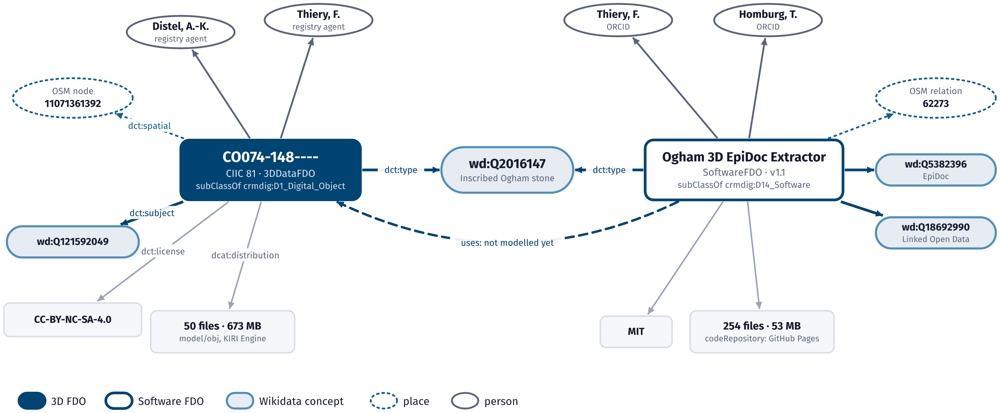
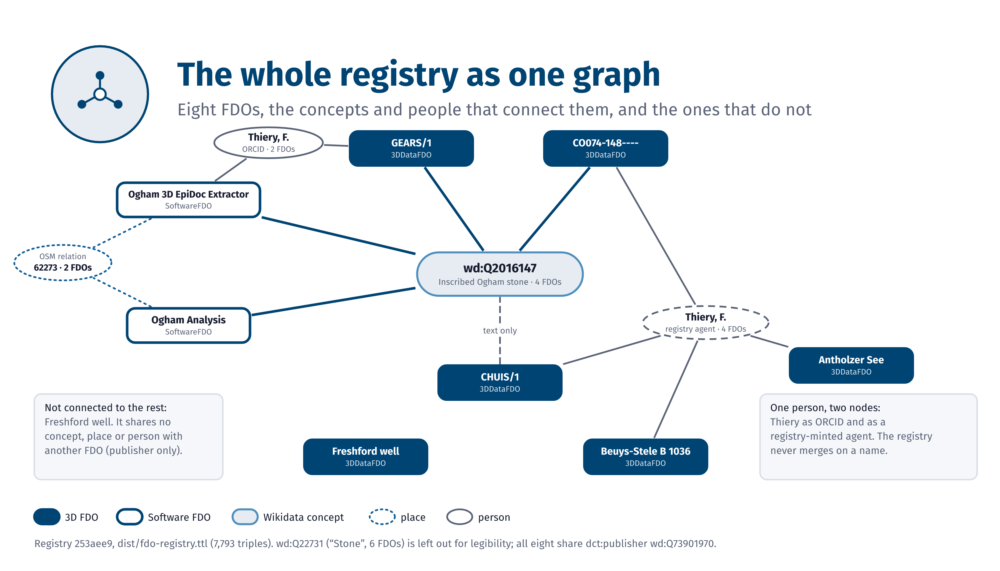

Ogham graph pictures
Graph pictures of Ogham stones, their 3D FDOs and the software that uses them.

OG.1Ogham in the graph: stones, 3D models and software around the Wikidata item Q2016147, drawn from real registry triples. All five FDOs share dct:publisher wd:Q73901970 and one fdo:context, “Ogham Stones in the Wild and in Museums in Ireland”. Dashed: free text, or a second node for the same person; CHUIS/1 is missing from Q2016147.
FDOx-squirrel, fdox-visuals (Florian Thiery, LEIZA). Code: MIT licence. Data: FDOx registry 253aee9 (release 2026-09-03), dist/fdo-registry.ttl. Labels are those of the bundles.


OG.2One Ogham stone, its 3D FDO and the software: one hop around each FDO. The link between them is the open point (not modelled yet): both FDOs are typed with the same concept and share fdo:context and publisher, but that software works on that kind of object is not an edge. The dashed arc is a proposal (e.g. prov:used), not part of the data.
FDOx-squirrel, fdox-visuals (Florian Thiery, LEIZA). Code: MIT licence. Data: FDOx registry 253aee9 (release 2026-09-03), dist/fdo-registry.ttl and registry-index.json. Labels are those of the bundles.



OG.3The whole registry as one graph: eight FDOs, the concepts and people that connect them, and the ones that do not. The Freshford well shares no concept, place or person with another FDO (publisher only). Thiery appears as two nodes, as ORCID and as a registry-minted agent; the registry never merges on a name. wd:Q22731 (“Stone”, 6 FDOs) is left out for legibility; all eight share dct:publisher wd:Q73901970.
FDOx-squirrel, fdox-visuals (Florian Thiery, LEIZA). Code: MIT licence. Data: FDOx registry 253aee9 (release 2026-09-03), dist/fdo-registry.ttl (7,793 triples). Labels are those of the bundles.